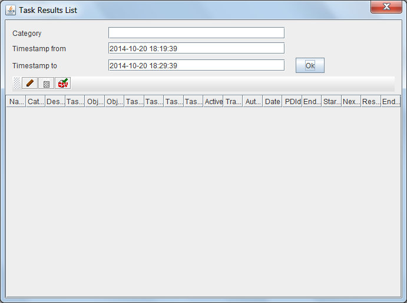

Lista Tareas Finalizadas
Al seleccionar la opción de administrar Tareas Finalizadas, aparecerá lesta pantalla que permite visualizar el listado de Tareas Finalizadas.
Para filtrar las Tareas Finalizadas que se desea revisar, debe introducirse una categoría y un rango de fecha hora (por defecto aparece un rango de los últimos minutos, que puede modificarse) y pulsar el botón. La lista de Tareas Pendientes que cumplen las condiciones aparecerá en la tabla de resultados. La tabla de resultados muestra los datos:
- Identificador único de la tarea pendiente ("orden de trabajo")
- Nombre identificativo de la tarea
- Descripción de la tarea
- Categoría de la tarea
- Tipo de Tarea
- Tipo de objeto (Carpetas o Documentos) sobre los que se aplicará la tarea
- Filtro de los objetos (para las tareas asociadas a eventos correesponde al identificador PDID de la carpeta o documento)
- Parámetros de la tarea. Dependen del tipo de tarea.
- Fecha hora de la próxima ejecución de la tarea
- Indicador de si la tarea está activa (y por tanto se ejecutará) o no.
- Indicador de si la tarea es transaccional (y por tanto se ejecutará para todos los objetos afectados solo para algunos) o no.
- Nombre del último usuario que modificó la tarea
- Fecha y hora de la última modificación

Esa tabla de resultados puede ordenarse seleccionando la cabecera de cada columna. Puede también cambiarse el tamaño de cada columna arrastrando la línea separadora de las cabeceras
Sobre la tabla de resultados se dispone de varios botones que permiten realizar operaciones sobre el elemento seleccionado. Las operaciones disponibles son:
-
 Visualizar el elemento seleccionado
Visualizar el elemento seleccionado
-
 Eliminar el elemento seleccionado (Siempre que no se esté utilizando)
Eliminar el elemento seleccionado (Siempre que no se esté utilizando)
-
 Exportar todos los elementos listados en formato CSV, para su importación en Hojas de Cálculo o BBDD
Exportar todos los elementos listados en formato CSV, para su importación en Hojas de Cálculo o BBDD
-
 Relanzar la tarea como otra copia con los mismos datos
Relanzar la tarea como otra copia con los mismos datos
En caso de producirse un error (carencia de permisos del usuario, incoherencia de los datos, etc), la operación se cancela y se comunicará al usuario el motivo del error.
Ver: Lista de Tareas Programadas, Lista de Tareas de Eventos y Lista de Tareas Pendientes
Índice Ayuda OpenProdoc